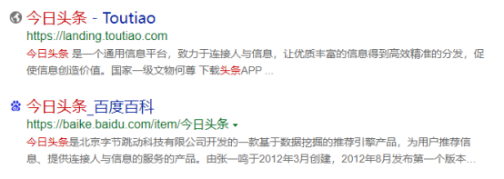

我的网站
目 录
一、项目基本概况
二、项目的SWOT分析 （一）优势点 （二）局限性 （三）威胁点 （四）机会点
三、商业模式分析： (一) 综合性商业模式 （二）主题性商业模式 （三）专业性商业模式 四、项目整体定位 （一）项目的经营业态定位 （二）客户定位
五、营销推广 （一）推广主题 (二) 项目形象包 （三）总体宣传策略 （四）销售策略

香格里拉商铺市场定位与推广策略
一、项目基本概况
正丰·香格里拉小区位于怀远南街(原卫谢南路)、西接蔡桥 路、南临沙湖大道，占地300余亩„„„„„„
二、项目的SWOT分析
虽然本项目地段位置较为优越，但现实又存在着一些影响项目形象的因素，以至商铺目前处于滞销状态。所以我们只有充分认识到该项目的优缺点，并充分发挥其的优势，才是本项目在后期的营销过程中制胜的关键所在。
（一）优势点（S）：
1、 项目当前交通较为便利，周边有中卫一中、六小、世纪幼儿园；
2、 项目地处新老城交界地，发展钱景胜好；
3、 本项目商铺目前为现楼，满足部分自用型商家即买即用的需求，降低购买者的置业风险； 4、 项目开发商XXXX现在在当地一定的知名度，当地市民对项目及公司比较认可；
A、在项目商铺的运作过程中，充分渲染项目的区位优势、交通便捷；
B、在项目商铺的运作过程中，强调该区域的发展钱景和由此带来的商机；
C、在项目的推广时，利用XX集团的品牌优势，增加置业者与投资者的信心；
（二）局限性（W）
1、 项目所处地段目前不具备商业氛围及人气带动商铺销售的条件；
2、 本项目周边商业已稳定，大多都是以租带售的形式出租，对出售发展商业略为不足；
3、 该项目商铺销售周期较长，二期已现房形式出售，造成一定的负面影响，使购买者有种冷铺的想法；
4、 项目商铺缺乏整体形象定位，主题不鲜明；
5、 项目商铺规模比较大、销售难度强，需要加大推广力度；
◆解决方法： （1） 对商铺进行市场定位，明确目标客户； （2） 确定经营主题，从而以有特色的经营方向带动商铺的销售； （3） 加大推广力度，扩大商铺的暴光率与市场知名度； （4） 设立部分“免息分期付款方式”，降低购房者的置业门槛，吸引其入市（开发公司自行运作）；
（三）机会点（O）
1、 区位优势的发挥，利用周边地区；
2、 以周边各大住宅小区及农贸市场现有人气，带动商铺的销售；
3、 打造中卫前所未有的“特色一条街”来整体销售；
（四）威胁点（T）
1、销售价格较高，总价高，很多置业者无能力购买；
2、周边商业已逐步完善，不好吸引重复置业者
3、不是正街，所以相对于卫谢南路显得非常冷清；
三、商业模式分析： 就目前的商业模式来看，主要有三种：一是综合性商业模式，二是主题性商业模式，三是专业性商业模式。
（一）综合性商业模式 这一模式奉行的是购物、休闲通吃，衣、食、住行一条龙服务。商场内行业种类众多、品牌杂乱、档次齐备，可以满足任一层次消费者的任一生活需求，并且在购物的同时能够进行饮食、品茗等休闲活动，拉动社区内群体消费。从这一个角度去分析，此种模式似乎能够以全面网络住所有的消费者，而且聚人气、提消费，应该是理想的商业模式。但是，实际上这种模式已经在全国的经济态势里遭遇了严峻考验，中卫亦不例外，这一模式所表现出来的老旧之态就越明显，所面临的危机就越大。究其因，在于品牌市场的进一步细分，消费者的需求不断的向个性化发展，使得任何全面式的经营都失去了销售点的深化机会。
（二）主题性商业模式 主题的确定范围很广，无论是从文化层次还是人群分类亦或商品档次等任何一个角度去发挥，都能找到相应主题。然后以该主题为核心以及规则，展开经营。比如女人世界、男人世界、儿童世界，就是以人群分类为主题，围绕某一类人群的用品，这一特定范围对品种、品牌进行筛选、过滤，进行有针对性的经营。
这类模式与其它商业模式相比，主要在于目标客户群以及满足需求上的区别。它不局限于某个行业，在商品种类上不具备占绝对优势的市场平台，但它的目标客户群却是一定的，或是某一文化层次、或是某一性别、或是某一经济群体等等。对于这些群体来说，主题商业能够尽可能的满足他们的异质化需求和个性化心理诉求，针对性强。 但由于这种商业模式针对性强的负面影响，客户范围窄，未来发展前景难以预料，市场风险相对较高。并且这种商业模式要求：
⑴ 规模化，主题经营独占面积庞大，与本项目规模不匹配；
⑵ 规范化，主题经营从管理到经营行为都比较规范，甚至进行网络运作，所涉及成本高昂、费用巨大。
⑶ 租金低廉，主题商业通常以较低租金吸纳商家聚集入场的经营，这对投资者说是最不愿意看到的情况，于本项目销售也不利。 所以，这种商业模式也不适合本项目的商铺。 （三）专业性商业模式 这一类型商业以某一行业为主要依托，加深品牌与档次的细分，集中力量满足全体消费者的某一种特定需求，尤其是个性化、异质化的心理诉求。这类商业模式的优势就在于针对性强，专业化程度高。某一行业的发展将直接影响到该行业专业市场的经营能力与盈利空间。所以，对于目前中卫蓬勃发展的房地产，它必将带动其他相关行业的蓬勃发展，如建古玩、土特产业、中卫特色等发展。因此，对于香格里的商铺，发展专业性商业模式较为可行。
四、项目整体定位
（一）项目的经营业态定位——古玩、土特产定位商业模式 基于上面对本项目的SWOT分析及各种商业模式的分析，并结合我司对该片区的调查分析，同时综合我司在该片区及以往的操盘经验，我司建议对该项目重新进行市场定位，确定商铺的经营主题，明确商铺的经营方向，从而带动商铺的销售。 本项目位于新老成交界处，从地理位置这一角度来看，目前地段繁华程度不够，项目商铺规模不够大，结合商铺成功运作模式的分析，我司建议将本项目商场定位为古玩、中卫特色一条街。
A、标榜中卫首个专业古玩、土特产为特色，成为中卫市第一面独有旗帜。
B、这样定位的优势
a. 为客户规避市场风险，坚定投资信心，增加销售热度。因为这样定位，可以减少与直接竞争对手（如世纪佳园、黄湾村商铺）的接触面。目前，无论是世纪佳园、黄湾村的商铺，还是六小周边商铺，都以满足消费者的日常生活需求为突破口，且目前空置量较大，如果本项目的商铺雷同于周边其他项目，必将增加市场的压力，加剧市场竞争。在这方面，本项目明显处于不利地位；
b. 有深厚的市场容量：我们的这个定位就目前情况，中卫的旅游特色将带动装当地古玩或者土特产的发展。；
c. 目前在该区域专业古玩、土特产店较少，有着很大的发展空间；
d. 良好的市场操作性：我们的这一定位，是基于详细的市场市场调查和商战实例整合出来的，有良好的前瞻性。同时，我们在定位的过程中，逐渐赋予和加深了它所包容的内涵，并准备一套有逻辑、有秩序的销售、促销准备活动。
（二）客户定位 购买本项目商铺的客户主要有以下几类： (1) 本区域的商铺投资者或古玩、土特产经营者； (2) 看好本区域地段发展前景的其他投资者或经营者； (3) 经营知名特产品牌的加盟者或连锁店；
五、营销推广策略
（一）推广主题 基于以上的分析及本项目的定位，并结合目前商业市场的实际情况，在项目的推广宣传时，主要围绕下面几个方面进行：
1、 宣传本项目商铺为中卫专业古玩、土特产一条街，突出其市场的发展前景及投资价值； 2、 宣传该市区旅游业及经济的蓬勃发展，必将带动这类行业的长期
发展，从而带出投资该商铺的的发展前景与潜力；
3、 交通便捷：本项目位于新老城交界处，交通条件较为便捷，且商铺前面的步行道空间比较小，对发展特色类行业极具潜力； 4、由于本商铺三期有一联二、一联三的，建议可以在价格不变的情况下“买一层送一层”；
(二) 项目形象包装
1、主题广告主导语： 项目目前无主题广告主导语，广告诉求不明显，我司建议以“香格里专业古玩、特产一条街”为主题，进行广告诉求；
2、项目导视系统 目前项目的导视系统表现手法不理想，未能将本项目的形象及主题表现出来，反而产生负面影响，建议在香格里商业街的门头上悬挂条幅，并在路口处设导视牌； 3、 现场包装
1） 条幅： 目前项目现场的楼体喷绘广告几乎没有，无法引起客户的关注。实际上楼体广告是项目最快，费用最省的广告形式之一。建议条幅广告重点在项目楼体上，挂出“香格里专业古玩、特产一条街隆重发售”、“香格里专业古玩、特产一条街优惠招租”及租售热线等内容的条幅，
2） 道旗：
为营造现场气氛，引起人们的关注，吸引更多的人气，我建议在商业街道路两侧竖立道旗，道旗内容以发布香格里古玩、特产一条街租售的信息为主，如“香格里特色街——香格里旺铺” “香格里铺王，一铺富三代”、“香格里特色街，商家投资的潜力股”“香格里商铺，低风险高回报”等等。
（三） 总体宣传策略 根据本项目所在区域的现状及项目自身的特点，在控制广告宣传费用的同时，将采用有针对性的宣传策略，加大广告宣传力度，并使之按步就班，有的放矢，使整个宣传策略与销售策略紧密配合，从而达到热销的效果，具体计划如下：
1）“造势”策略 针对本项目目前的销售状况，为渲染市场气氛，建议有针对性地在媒体上发表有关本项目的新闻撰稿，如中卫电视台游播招商等，内容主要以宣传介绍该项目地理位置及专业特色街街的发展前景，从而引出本项目商铺巨大的升值潜力，以令市场更加注目该物业，加强客户的投资信心。
2) 常规宣传策略 广告宣传以报纸广告、条幅、发单页为常规宣传，属最有效的宣传方式，但由于报纸广告成本较高，效果一般，建议不在报纸广告进行大量宣传，主要进行必要的派单与电视游播炒作，从而紧密配合销售策略采用，令常规宣传效果发挥至最大并控制广告费的投入量。
广告宣传安排如下：
报纸广告： 主要以当地的城市快讯报为主，一个月上两期，引出本项目巨大的升值潜力。这样广告费合理，却能达到我们的预期效果。 电视游播： 覆盖面广，收视率高，宣传途径最快的一种方式，联系播放一个月为一周期。
宣传单页： （1） 由于宣传单张的制作成本只需几毛钱，适合广范的大量派发，并且，本项目目前的单张在内容、色彩上不具有较强的视觉冲击力，因此，建议重新制作本项目商铺的销售宣传单张，制作要求能体现本项目的优越的地理位置、项目的定位及专业特色街的经营发展前景，同时附上商铺的投资分析案例， 如：以业主投资某一商铺为例 售价：8000元/ M2 面积：29.75 M2 总价：8000×29.75=238000元 首期5成：238000×50%=11900元 贷款：238000×50%=11900元 10年期月供款：11900×0.010892311(月供系数)=1296.2元/月 按目前该阶段租金保守估计为：60元/ M2 ，所以月出租可获得收益为：
29.75×60=1785元/月 结论:月租金>月供款 单张建议板开数可选择8K或16K双面制作数量20000份，扫地式派发。
四）销售策略
1）“以租金代首期”销售策略 这是针对一些对未来商铺价格走势把握不定的商家所采取的销售策略，租用本项目商铺的客户在一年或两年内决定购买的，采用已缴付的一定期限内的租金可作为购买单位的首期款，刺激租户的消费心理，促使他们由租客变业主，消化一部分面积。
2）推出“首期两成，三成免息分期付款”促销方案 为降低置业门槛，建议在付款方式上，提供十年，五成按揭；并且在宣传上，推出“首期两成”促销方案，其余三成在两年（或一年）内免息分期付清，降低业主置业门槛，引起大量消费者的关注，从而达到促销的目的； 3）推出品牌商家进驻优惠策略 品牌商家的品牌效应能给投资者及经营者增强置业的信心，从而有力地促进销售，所以，对于有意进驻的品牌土特产集团公司设立办事处，在售价或租金上给予一定比例的优惠，如在售价上给予一定的折扣或在租金上给予3个月或半年的免租期，利用其品牌效应来带动其它商铺的发售与招租；
4）“客户领袖”奖励计划
针对目前裙楼商铺人气不足，为达到带动人气，建议对此推行“客户领袖奖励计划”，凡已认购的客户若能带领其它客户，进行认购并成交者，发展商将按所规定的标准奖励予领袖客户，如按其所购买的商铺以2%的返利给老业主。
5）低开高走，分期销售 以低价入市，利用羊群心理制造抢购热销的气氛；然后视市场反应，逐步提高售价，迫使客户迅速作出选择的决定；
6)针对目标客户采用DM策略 对于一些目标客户，建议将通过直邮（DM）或直接派人上门向各商家派发单张、海报等方式将有关资料传给客户，争取他们成为香格里商铺的业主或租户